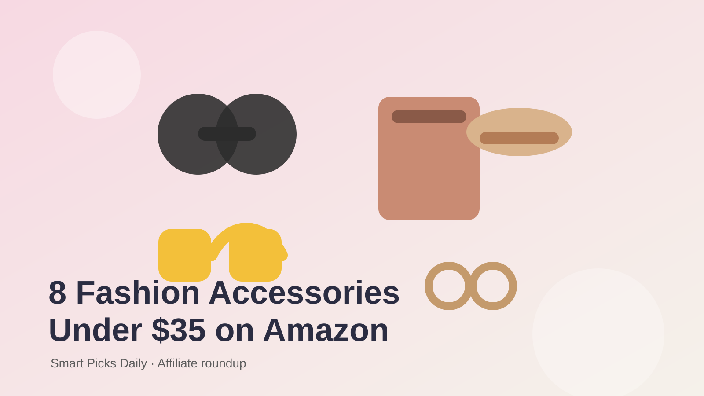

If your closet already has the basics, accessories are the fastest way to make outfits feel new again. This roundup focuses on high-intent Amazon fashion staples people buy year-round: bags, jewelry, sunglasses, belts, and hair accessories that are easy to style and easy to gift.
A quilted crossbody is one of the safest fashion bets on Amazon because it works for errands, brunch, and travel. Look for adjustable straps, zip-top closures, and neutral colors like black, cream, or tan.
Shop on AmazonGold hoops are an evergreen bestseller because they instantly polish casual outfits. Lightweight pairs with hypoallergenic posts are especially popular for everyday wear.
Shop on AmazonPolarized sunglasses feel premium without a designer price tag. Oversized frames are flattering, travel-friendly, and ideal for spring-to-summer fashion content.
Shop on AmazonLayered necklaces are a low-cost way to make basic tops look styled. Search for tarnish-resistant finishes and adjustable chain lengths for maximum versatility.
Shop on AmazonA clean belt can transform jeans, trousers, or oversized blazers. Bestseller-style belts usually feature simple gold buckles and neutral faux-leather finishes.
Shop on AmazonClaw clips continue to trend because they mix style and practicality. Multi-packs in matte neutrals are especially strong sellers for Pinterest-friendly hair content.
Shop on AmazonAn unstructured cap is perfect for athleisure outfits, travel days, and no-makeup looks. Bestseller picks usually come in washed cotton with an adjustable back strap.
Shop on AmazonA roomy tote is ideal for work, shopping, and casual everyday outfits. Strong sellers often include inner pockets, zip closures, and sturdy shoulder straps.
Shop on Amazon